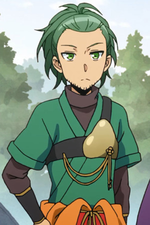

|
Gray Fullbuster |
- Fairy Tail
- Fairy Tail OVA
- Fairy Tail the Movie: Phoenix Priestess
- Fairy Tail x Rave Master
- Fairy Tail (2014)
- Fairy Tail Movie 2: Dragon Cry
|
Gray Fullbuster is an ice magic mage of Fairy Tail. He stricts a lot of the time due to training when he was younger. He has an rivalry with Natsu ever since they where young. He has a laid - back personality. |
|  |
Kanbe |
- Recovery of an MMO Junkie
- Recovery of an MMO Junkie Special
|
Kanbe is the quirky master of "@House Party" guild. He may be rough - sounding and behaves strictly but he thinks of members more than anyone. He is a sheild - carrying assassin. |
 |
Koujirou Shinomiya |
- Food Wars!
- Food Wars! The Second Plate
- Food Wars! The Third Plate
|
Koujirou Shinomiya is one of the graduated student turned into professional from Tootsuki Culinary Academy. Shinomiya's superiority complex made him feared by other students. He gets extremely offended when someone criticized his philosophy. Koujirou focus on French style cuisine. |
 |
N |
- Pokemon Black and White: Adventure in Unova
|
N appeared as a recurring character in the Pokemon anime. He is a mysterious man with the ability to hear Pokemon voices. |
 |
Tatsuya Shiba |
- The Irregular at Magic High School
- The Irregular at Magic High School: Get to Know Magic Studies!
- The Irregular at Magic High School The Movie - The Girl Who Summons The Stars
|
Tatsuya Shiba is a first year student in Course 2 of the First High School. He is the twin brother of Miyuki Shiba. He has a very cold personality execept when it comes to his sister and his friends. |